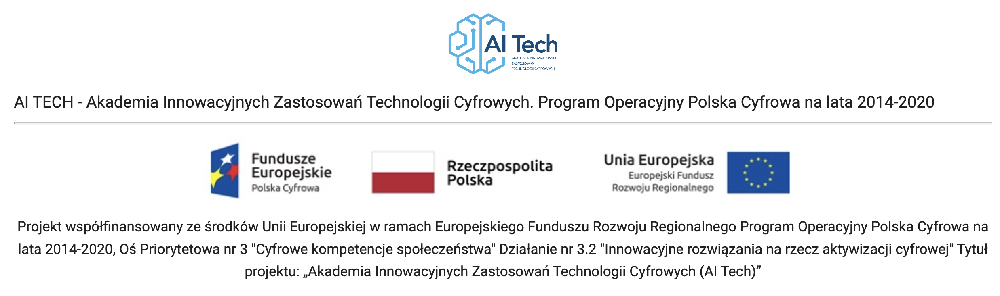
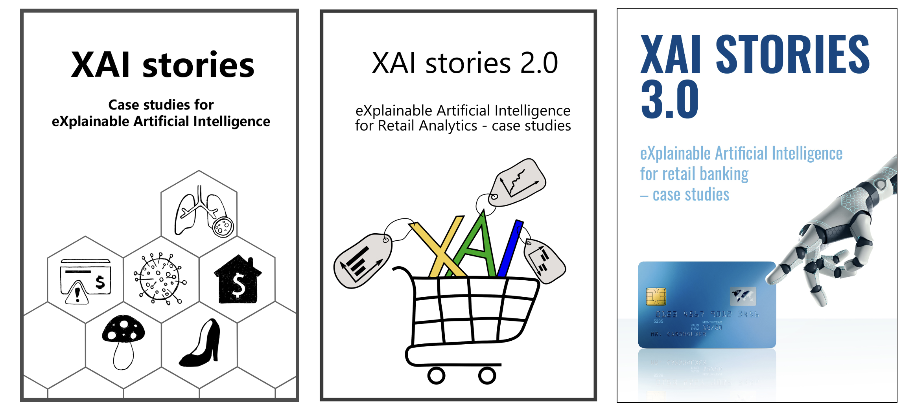
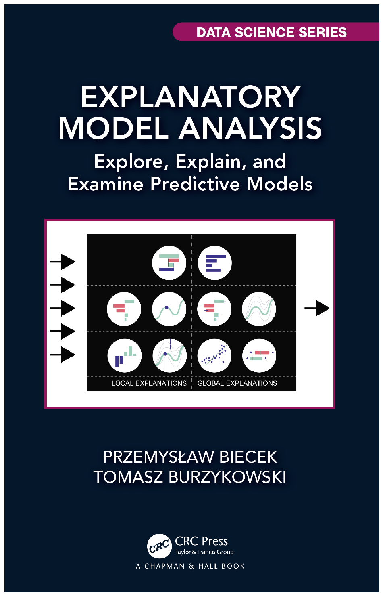
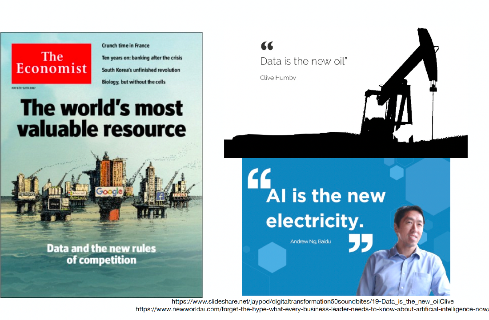
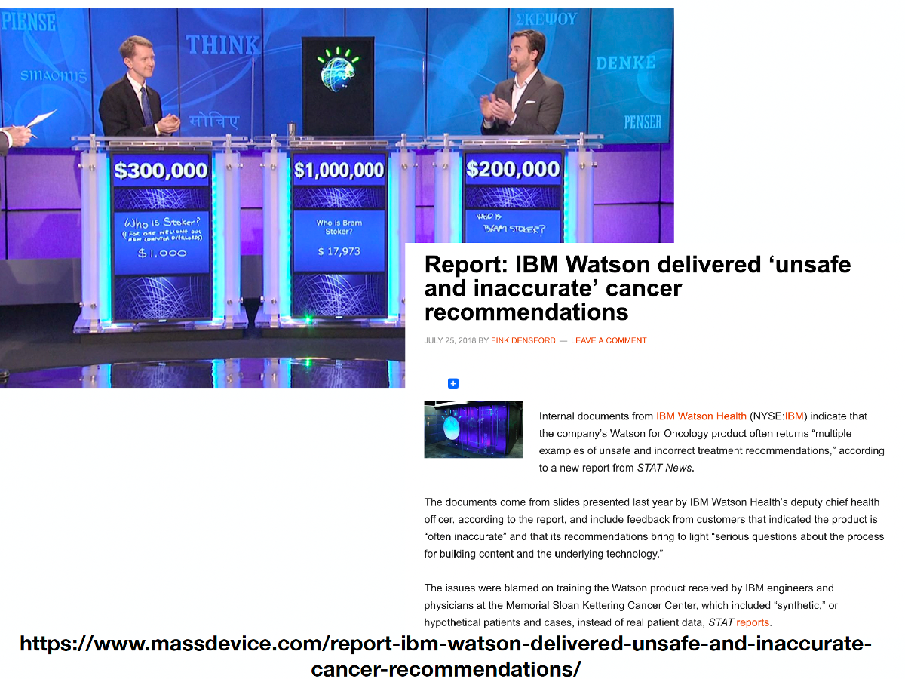

Introduction
eXplainable AI
Przemysław Biecek
Machine Learning @ MIMUW 2022

Design Principles
How it looked in the past
Interpretable Machine Learning 2022: https://github.com/MI2-Education/InterpretableMachineLearning2022
- Projects related to applications of XAI techniques to the real world problems in collaboration with business partners.
- 7 lectures + projects + homeworks + presentations
- Key focus: projects that lead to chapters in the ebook ‘XAI stories’

Example stories:
- https://pbiecek.github.io/xai_stories/story-house-sale-prices.html
- https://pbiecek.github.io/xai_stories_2/story-seasonal-products.html
- https://pbiecek.github.io/xai_stories_2/story-bert-in-the-recommendation-system.html
Comments after previous editions:
- Cooperation with another university is nice, but on our own we would do more
- Business applications are cool, but there is a lot of interest in research projects
- Systematic work, especially in the first half of the semester is good, and avoids piling up issues at the end of the semester
- Emphasis on commenting on the results, focusing on interpretation is very valuable (although time consuming)
- It would be great to have more lectures (than 7) in order to discuss techniques specific to certain modalities, such as computer vision and NLP
Key information about this edition
This year Github: https://github.com/mim-uw/TrustworthyMachineLearning-2023/
The classes are divided into:
- 7 lecture blocks, where we will discuss various XAI and fairnes techniques, but this is only an outline of a very rich and interesting field
- 2 blocks with student presentations, the place where we will learn about selected new XAI techniques
- 6 homeworks, they are related to the application of a selected XAI technique on a selected predictive problem
- a written exam, where there will be tasks similar to those we will discuss during homework
- we will mainly work on tabular data, although many of presented methods translate to problems in the area of computer vision, NLP, etc.
Lecture/exercises/lab
- Lecture hours are intended for the theory behind explanations but also project presentations (shared by both groups)
- Exercises are for discussions about homeworks and projects
The agenda
- 2022-10-07 – Introduction
- 2022-10-14 – Break-Down / SHAP
- 2022-10-21 – LIME / LORE
- 2022-10-28 – CP / PDP
- 2022-11-04 – PROJECT: First checkpoint - show your model and initial ideas for explanations!
- 2022-11-11 – VIP / MCR
- 2022-11-18 – Fairness
- 2022-11-25 – Evaluation of explanations
- 2022-12-02 – PROJECT: Second checkpoint - show your explanations and initial ideas for validation!
- 2022-12-09 – Counterfactual explanations (?)
- 2022-12-16 – Concept based explanations (?)
- 2023-01-13 – Student presentations
- 2023-01-20 – Student presentations
- 2023-01-27 – PROJECT: Final presentation - show your model, explanations and validation!
Teaching materials
Literature extending our lectures
- Explanatory Model Analysis https://ema.drwhy.ai/
- Fairness and machine learning https://fairmlbook.org/
- An Introduction to Machine Learning Interpretability https://www.oreilly.com/library/view/an-introduction-to/9781492033158/
- Interpretable Machine Learning. A Guide for Making Black Box Models Explainable https://christophm.github.io/interpretable-ml-book/
- The Hitchhiker’s Guide to Responsible Machine Learning https://github.com/BetaAndBit/RML

Grading
From different activities, you can get from 0 to 100 points.
51 points are needed to pass this course.
There are four key components.
- Homeworks (0-24) see for example Homeworks/HW1
- Presentations (0-10)
- Project (0-36) expect three milestones
- Written exam (0-30)
Grades:
- 51-60: dst
- 61-70: dst+
- 71-80: db
- 81-90: db+
- 91-100: bdb
The first homework
Read more at: Homeworks/HW1
In future homework, you will explain behaviour of predictive models, but in order to do so, you need to first train a few models.
Deadline: 2022-10-13 (next week) We will discuss results during next classes
Datasets: Choose one of the following datasets:
- Brain Stroke Dataset
- Heart Attack Analysis
- Alcohol Effects On Study
- FIFA-23
- Municipal Waste Management
About us
Przemysław Biecek
- works at Faculty of Mathematics, Informatics, and Mechanics at University of Warsaw and Faculty of Mathematics and Information Science at Warsaw University of Technology
- research interests include Responsible Machine Learning and eXplainable Artificial Intelligence (eXplainable Artificial Intelligence)
- worked in R&D teams at large and small corporations such as Samsung, IBM, Netezza, Disney, iQuor
- leads the work of the MI2.AI research team, which carries out XAI related research projects under NCN, NCBiR programmes (looking for collaborators)
- this is my fifth edition of classes about XAI
Hubert Baniecki
- PhD student in CS/AI at the University of Warsaw, MI2.AI research lab
- Finished 5-year studies in Data Science at Warsaw University of Technology
- 3+ years of R&D experience in explainable machine learning
- 4+ research articles published on this topic, most notably the dalex Python package
Class participants
Let’s get to know each other!
Model explanations – Why should we care?
Models, models, more models …
- For a long time in the media, data, machine learning and artificial intelligence were uncritically glorified
- The dominant narrative was that almost every problem can be solved having enough data
- Serious people were making statements like “there is no point in training radiologists, because they will be replaced by AI”
- As with other bubbles, anything that is (star)AI(star) raised (unhealthy) attention
- The media raced to announce what new problem AI had been solved

… however, not every model works …
There is tremendous potential in AI, but:
- there is a growing list of examples in which, despite initial bursts of promise, AI systems did not perform as expected
- good results on training data did not transfer to real-world data
- systems performed in outright idiotic ways, even though they seemed to work very well during training
- more and more people began to cooldown this hurra optimism and collect lists of epic failures of AI
- at this point we could discuss various examples of spectacular failures of AI for the next two hours
- see ,,Weapons of Math Destruction: How Big Data Increases Inequality and Threatens Democracy’’ by Cathy O’Neil for a very nice overview of these problems (audiobook lasts for over 6 hours)
Read more at: https://romanlutz.github.io/ResponsibleAI/

… and sometimes it has serious consequences
- Many AI failures fall into the category “ridiculous”. Whether it’s a malfunctioning facial recognition system that takes pictures, or a cleaning robot that can spread some mess all over the room.
- But AI systems are also increasingly being used for serious applications in the fields of biology, medicine or finance. And here mistakes in operation can give rise to serious consequences.
- In fact, every major company developing AI solutions has such failures on its conscience. The slide above is from a StatNews report on the implementation of IBM Watson for Oncology. Despite enormous resources and even greater hopes, the system was not well received by doctors. Recommendations for this system were called inacurate and unsafe.
Read more: https://www.statnews.com/

This should not happen
- How do we know what the model has learned? Maybe it bases decisions on some strange artifact?
- This is not a made up possibility, in the example below the model’s decisions correlated strongly with the fact that there were captions in the lower left corner.
- It turns out that in the learning data there was often a description in the lower left corner next to the horse pictures. Instead of learning to recognize the characteristics of horses, it is much easier to recognize the presence of text in the lower left corner.
Read more: Unmasking Clever Hans predictors and assessing what machines really learn
Sometimes users differ on how the system should work
- Users may have different expectations about how the system should work
- For example, a system showing a job ads for truck drivers, presenting these ads more often to men aged 20-50. Is this an example of age and gender discrimination or an increase in the chance of getting an employee?
- Who should define who should watch the selected advertisement and when
Read more: https://www.propublica.org

Number of published articles on XAI
- The number of papers related to XAI is growing rapidly
- It is not only new methods but also processes, practices, examples of application in various disciplines
The reaction is to try to regulate AI
- For several years, the European Commission has been working on a so-called AI Act to regulate the use of automated algorithms within the European Union.
- The act is expected to be passed next year – 2023
- The act includes specific expectations related to the explainability of decisions supported by automated decision-making systems
Read more: https://eur-lex.europa.eu
Model explanations – How to get there
DARPA program for development of XAI methods
- You may know DARPA for developing computer mouse (1964), GPS (1983), Internet – ARPANet (1969) or drones (1988).
- In 2017, DARPA launched a major program to fund projects focused on Explainable Artificial Intelligence (XAI) in particular on AI-human collaboration. Research funded by this program is still ongoing and the program itself has contributed to the growing interest in XAI topics.
- It is worth reading about the assumptions and concepts of this program, many of the ideas are still (after 5 years) valid and attractive research topics.
Read more: https://www.darpa.mil/
Responsible and ethical AI - the business response
- Interestingly, this line of research was very quickly get the interest of business.
- On the websites of many companies dealing with AI-related products and services, you can find bookmarks with the topic of “Trustworthy AI”.
- On the slide we have a few sites of companies producing software for (Auto)ML, namely H2O, we have consulting companies such as McKinsey, PWC, IBM, as well as product companies such as Samsung and Tensorflow.
- Many companies are outdoing themselves in presenting their principals which include slogans such as Transparency, Fairness, Explaianbility. How can these slogans be realized?
Initiatives to increase the effectiveness of AI applications are being undertaken by various organizations
- Not only business, but also large international organizations are actively working to promote AI solutions that are safe and transparent
The right to an explanation in Europe
From Recital 71 EU GDPR
,,(71) The data subject should have the right not to be subject to a decision, which may include a measure, evaluating personal aspects relating to him or her which is based solely on automated processing and which produces legal effects concerning him or her or similarly significantly affects him or her, such as automatic refusal of an online credit application or e-recruiting practices without any human intervention.
Such processing includes ‘profiling’ that consists of any form of automated processing of personal data evaluating the personal aspects relating to a natural person, in particular to analyse or predict aspects concerning the data subject’s performance at work, economic situation, health, personal preferences or interests, reliability or behaviour, location or movements, where it produces legal effects concerning him or her or similarly significantly affects him or her.
However, decision-making based on such processing, including profiling, should be allowed where expressly authorised by Union or Member State law to which the controller is subject, including for fraud and tax-evasion monitoring and prevention purposes conducted in accordance with the regulations, standards and recommendations of Union institutions or national oversight bodies and to ensure the security and reliability of a service provided by the controller, or necessary for the entering or performance of a contract between the data subject and a controller, or when the data subject has given his or her explicit consent.
In any case, such processing should be subject to suitable safeguards, which should include specific information to the data subject and the right to obtain human intervention, to express his or her point of view, to obtain an explanation of the decision reached after such assessment and to challenge the decision.’’
The right to an explanation in Poland
- Interestingly, the right of explanation has also been present in Polish law for at least three years.
- Financial institutions still have not developed good solutions.
- However, the topic of explainability as a consumer right is there, and we see an growing demand for solutions that will realize this need for explainability.
Model explanations – What we will talk about
How to think about the explainability of predictive models
When we think about the interpretability of models we usually distinguish three classes of methods
- Interpretable by design, i.e. methods whose structure allows us to directly analyze how the prediction was formed. For different classes of models, explanations may look different, but they are directly based on model parameters. For linear models they are coefficients, for k-neighbors they are neighbors, for naive Bayes they are marginal distributions
- model specific, i.e. methods whose structure is complex but can be summarized or represented to better understand the relationship between input and output. The two most common classes of models with model-specific explanations are tree model committees (here we can summarize the tree structure) and neural networks (here we can usually summarize the flow of the signal through the network)
- model agnostic, i.e. methods to which this course is devoted, methods that assume nothing about the structure of the model and can be used for models with different structures. Moreover, they can be used to compare models with different structures.
Read more: arxiv.org/2009.13248
There is no one-size-fits-all solution
- We will talk about how to identify the needs of different stakeholders and match them with explanatory techniques
- It’s still area that needs more active research, there’s a lot of talk about user needs, but the available methods are more aimed at model developers
Read more: Transparency, Auditability and eXplainability of Machine Learning Models in Credit Scoring
The pyramid of explainability
- In this class we will discuss several techniques for global and local analysis of the model.
- Global analysis is concerned with the behavior of the model on the entire data
- Local analysis deals with the model’s behavior on one/some observations
- The subsequent techniques are complementary, creating an extended, increasingly detailed description of the model’s behavior
Shift in our focus: Statistics
- Statistical analysis of data most often assumes a great deal of knowledge about the phenomenon. Understanding the data allows to choose appropriate transformations, representations. Verification is oriented toward hypothesis testing, such as by p-values
Shift in our focus: Machine Learning
- Machine learning puts a priority on optimizing the model, especially for performance. There is a lot of searching through the space of possible solutions here to find the best one
- Knowledge of the phenomenon is no longer so important
Shift in our focus: Human Oriented ML?
- What’s next. If model building can be easily and quickly automated, in-depth model verification will become more important
- This is where models are created seamlessly according to the needs of the user, and the user can focus on decisions supported by the models
Take-home message
Why interpretability is important?
- Higher trust -> higher adoption of ML/AI solutions that will support decision making process
- May be required by auditors, regulators, law
- New tool for model exploration -> to gain new insights about the data/nature of some phenomenom
- Gatekeeping role, human can control and/or block wrong decisions when knowing key reasons behind these decisions
- Debugg/improve data or models, identify wrong behaviour and help to plan actions to fix it
- Deeper diagnostic of models, validation against some domain knowledge, expectations or other values (like human rights -> fairness)
Goals for this course:
- Learn XAI techniques (model agnostic)
- Learn the strengths and weaknesses of these techniques while doing a hands-on projects
- Learn how to communicate explanations to (domain) experts and lay users
eXplainable AI – Introduction – MIM UW – 2022